Lecture 1 自然语言处理简介
语言的定义：
- 一种由三部分组成的符号交流系统：记号，意义和两者间的对应关系
- 由组合语法规则制约、旨在传达语义的记号形式系统
概念：利用计算机对自然语言进行各种加工处理、信息提取及应用的技术。
重要性：
- 自然语言丰富多样，是人类表达思想、传递信息的重要载体。
- 语言智能是人类智能的重要表现，语言智能被誉为人工智能皇冠上的明珠。
- 具有重要战略地位。
应用：
- 文本分类：垃圾邮件检测、新闻分类
- 情感分析：用户情绪感知、产品分析、舆情监控、情绪原因识别
- 信息抽取：知识图谱、搜索引擎、对话机器人
- 信息检索
- 推荐系统
- 问答系统
- 对话系统：手机助手、智能客服
- 文本生成：图像描述生成、文本摘要、赛事解说、剧本生成
难点：
- 无处不在的歧义
- 语⾔表达的多样性、动态性
- 上下文和世界知识（语言无关）的利用和处理
Lecture 2 基于规则的自然语言处理
规则方法的思想：
- 以规则形式表示语言知识
- 基于规则的知识表示和推理
- 强调人对语言知识的理性整理（知识工程）
- 受计算语言学理论指导
- 语言规则（数据）与程序分离，程序体现为规则语言的解释器！
规则方法的发展脉络：
- 起步发展期：人工智能诞生
- 反思发展期：任务失败目标落空
- 应用发展期：专家系统遍地开花，人工智能转向实用
中文分词：方法、歧义以及如何消歧
分词是指根据某个分词规范，把一个“字”串划分成“词”串。
分词方法：
- 正向最大匹配(FMM)或逆向最大匹配(RMM)
- 从左至右(FMM)或从右至左(RMM)，取最长的词。
- 双向最大匹配
- 分别采用FMM和RMM进行分词，能发现交集型歧义；如果结果一致，则认为成功；否则，采用消歧规则进行消歧。
- 正向最大、逆向最小匹配
- 正向采用FMM，逆向采用最短词，能发现组合型歧义。
- 逐词遍历匹配
- 在全句中取最长的词，去掉之，对剩下字符串重复该过程
- 设立切分标记
- 收集词首字和词尾字，先把句子分成较小单位，再用某些方法切分
- 全切分
- 获得所有可能的切分，选择最大可能的切分
切分歧义：
- 交集型歧义：ABC切分成AB/C或A/BC e.g. “和平等”
- 组合型歧义：AB切分成AB或A/B e.g. “马上”
- 混合型歧义：由交集型歧义和组合型歧义嵌套与交叉而成
伪歧义与真歧义：伪歧义字段指在任何情况下只有一种切分，根据歧义字段本身就能消歧；真歧义字段指在不同的情况下有多种切分， 根据歧义字段的上下文来消歧。
基于规则的歧义字段消歧方法：
- 利用歧义字串、前驱字串和后继字串的句法、语义和语用信息
- 句法信息：一阵风吹过来，今天有阵风 根据前面是否有数词
- 语义信息：他学会了解数学难题 难题一般是解而不是了解
- 语用信息：乒乓球拍卖完了 根据场景、上下文确定
- 规则的粒度：
- 基于具体的词（个性规则）
- 基于词类、词义类（共性规则）
规则方法的优点与缺点
优点：
- 利用人类专家总结的规则，对特定领域精确度高
- 受到计算语言学理论指导
缺点：
- 规则质量依赖于语言学家的知识和经验，获取成本高
- 规则有限，泛化性、鲁棒性差
- 一致性差，规则之间容易发生冲突
- 扩充困难，大规模规则系统维护难度大
Lecture 3 语言模型和词向量
统计语言模型的定义、参数估计、平滑以及公式推导等
语言模型是衡量一句话出现在自然语言中的概率的模型，核心在于根据前文预测下一个词出现的概率。
数学形式上，给定一句话 $s = \{w_1, w_2, \cdots, w_n\}$, 对应概率为
用频率估计概率（大数定理）
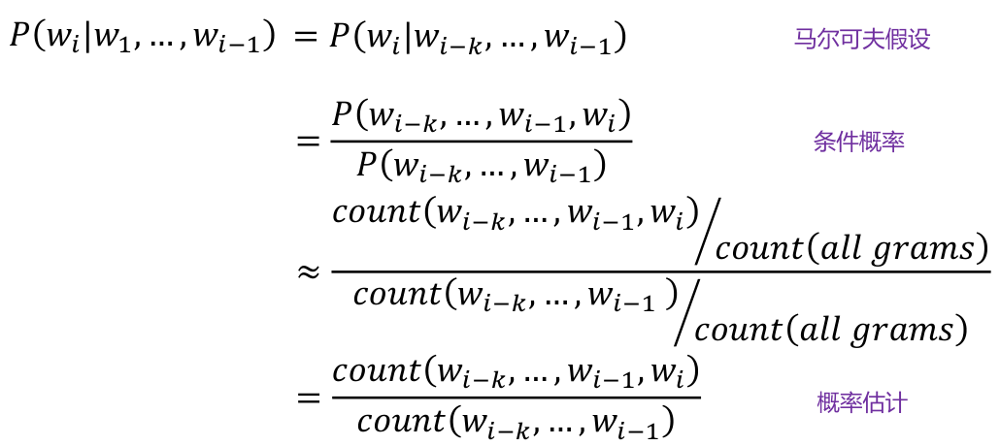
数据稀疏问题：没有足够的训练数据，对于未观测到的数据，出现零概率现象。
解决办法：参数平滑。
拉普拉斯平滑
回退策略（n-gram -> m-gram, n > m）
参数规模问题：随着 $k$ 的增大，参数数目是指数爆炸的，因此需要神经语言模型和好的词表示。
语言模型评价方法：困惑度 (Perplexity) 用来度量一个概率分布或概率模型预测样本的好坏程度。可以用来比较两个概率模型，低困惑度的概率模型能更好地预测样本。
离散词表示 vs 连续词表示
离散词表示
方法举例：
One-hot 表示：当前词维度为1，其它词的维度为0
词频 (Term Frequency, TF)：在文档中出现频率越高的词对当前文档可能越重要
逆文档频率 (Inverse Document Frequency, IDF)：在很多文档中都出现的词可能不重要（如虚词）
TF-IDF：综合一个词在当前文档中的频率和所有文档中出现的次数来度量这个词对当前文档的重要性（tf 乘 idf）
优点：可解释性好，允许直接匹配，简单易用。
缺点：语义鸿沟（不同词在不同维度，很难建立联系）、维度爆炸（一个词一个维度）
连续词表示（分布式词表示）
- 词向量（word vectors, word embeddings）：用一个低维稠密的向量表示单词的整体含义
- 特性：
- 每一维不表示具体的含义，利用整体来表达含义
- 低维：节省存储空间，节省计算空间
- 可以度量词之词之间的语义相似性
- 核心思想：一个词的含义能被这个词所在的上下文反映
- 方法举例：
- Word2Vec: 是一套学习词向量的算法框架
- 算法思想：
- 大量的自然语言文本（训练语料）
- 为词表中的每个词随机初始化一个向量表示
- 遍历文本中的每个单词 𝑐，其上下文单词为 𝑜
- 使用单词 𝑐 的上下文 𝑜 预测单词 𝑐 的概率分布（核心思想）
- 更新词向量的表示使得单词 𝑐 的预测概率最大化
- 算法思想：
- GloVe
- Word2Vec: 是一套学习词向量的算法框架
- 优点：低维（节省存储空间和计算时间），可以度量词之词之间的语义相似性，能够捕获上下文信息。
- 缺点：维度不灵活，语义歧义，难以解释，数据依赖性大。
CBOW 和 Skip-gram 的异同
CBOW：连续词袋模型。
- 目的：获得词向量
- 优化目标：局部语言模型 $P(w_i | w_{i-2}, w_{i-1}, w_{i+1}, w_{i+2})$
- 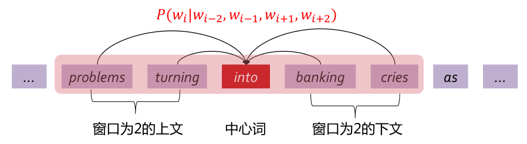
相同点：
- 基于核心思想：一个词的含义能被这个词所在的上下文反映
- 目的：获得词向量
- 优化目标：局部语言模型
- 使用相同的训练样本
- 使用神经网络进行训练
不同点：
连续词典模型（CBOW）利用单词 𝑐 的上下文 𝑜 预测单词 𝑐
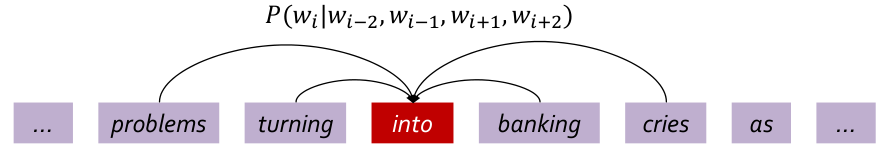
Skip-gram 利用单词 𝑐 预测单词 𝑐 的上下文 𝑜
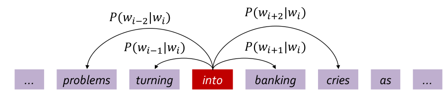
word2vec 如何加速训练
以 CBOW 为例，数据似然和损失函数为
需要计算 $P(w_i|w_o;\theta)$: 度量单词 $w_i$ 和上下文 $w_o$ 的相关性。$v_o^T v_i$ 越大越相关。其中 $v_i$ 为 $w_i$ 词向量，$v_o = \frac{v_{i-k} + \cdots v_{i-1} + v_{i+1} + \cdots + v_{i+k}}{2k}$ 为上下文 $w_o$ 的词向量。故
Softmax 的困境：上式分母的计算非常耗时，需要遍历词表中所有的词。需要通过其他方法加速训练。
负采样：
不再遍历词表中的所有词。
随机采样一些噪音词作为负样本，通过正样本和负样本之间的对比学习让模型知道当前位置应该是放什么词。
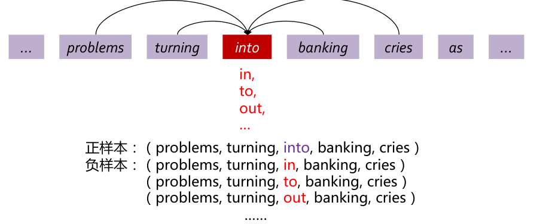
将正样本最大化，将负样本最小化（$u$ 是另一套词向量，训练更稳定）
这种加速方法可以应用到其他方法中
GloVe 的核心思想
共现矩阵法 VS 直接学习法：
- 共现矩阵：
- 代表方法： LSA, HAL
- 优点：速度快、有效利用统计数据
- 缺点：过分依赖单词共现性和数据量
- 直接学习：
- 代表方法： Skip-gram/CBOW
- 优点：能捕获语法和语义信息
- 缺点：速度和数据规模相关、未有效利用统计数据
GLOVE：集两家之长
共现概率矩阵 $X_{ij}$
单词 $w_i, w_j$ 的词向量 $v_i, v_j$.
核心思想：以学习的方式，用词向量之间的语义关系来拟合共现概率矩阵
Lecture 4 神经网络和语言模型
深层网络的问题以及如何理解
RNN：梯度爆炸、梯度消失
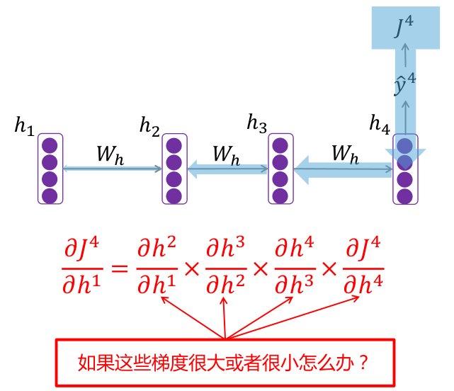
- 深层网络比一般神经网络更容易产生梯度问题：梯度连乘后容易接近0（消失）或者爆炸。
- 梯度消失常用解决方案：ReLU, 残差连接…
- 梯度爆炸常用解决方案：梯度裁剪（Clipping）
Lecture 5 高级神经网络和预训练模型
注意力机制的设计目标与应用领域
Attention Mechanism 设计目标：目标端解码时，直接从源端句子捕获对当前解码有帮助的信息，从而生成更相关、更准确的解码结果。
优点：
- 缓解 RNN 中的信息瓶颈问题
- 缓解长距离依赖问题
- 具有一定的可解释性
应用领域：
- 文本分类：帮助模型关注并捕捉与分类任务相关的关键词或短语
- 文本摘要：帮助模型确定哪些部分的文本是重要的，以生成准确而具有信息量的摘要。
- 视觉问答：将注意力集中在与问题相关的图像区域上，从而生成准确的回答。
- 语音识别：用于将语音信号与对应的文本进行对齐。
Transformer 网络
组件、设计原理，尤其是 position embedding
Transformer 总体架构：一个基于 attention 机制的编码器，一个基于 attention 机制的解码器。
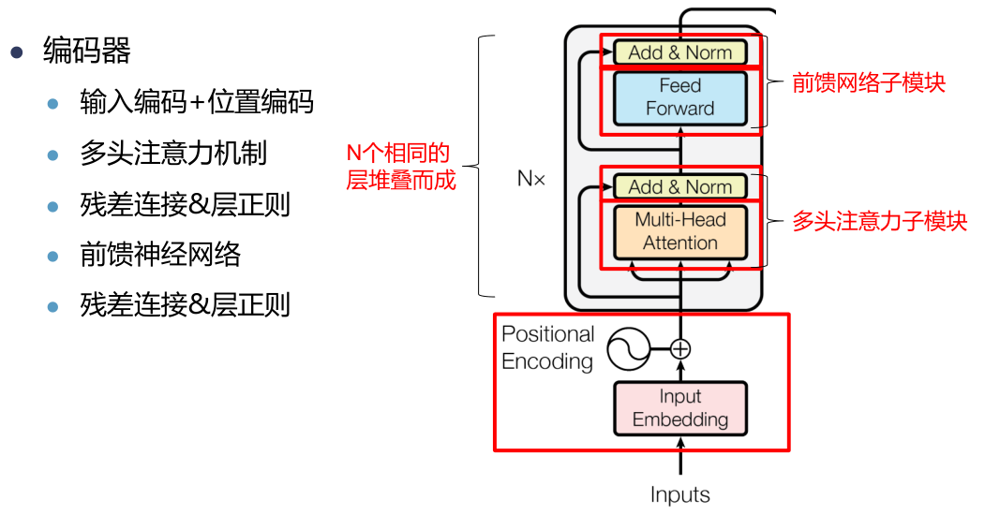
位置编码
- 为什么需要？注意力计算是加权和，无法考虑相对位置关系。
- 将位置编码 $p_i$ 注入到输入编码中 $x_i = x_i + p_i$
- 两种表示：
- 三角函数表示：直接根据正余弦函数计算位置编码，不需要从头学习，直接计算得出。
- 从头学习：随机初始化位置编码 $p_i$，并跟随网络一起训练，能更好地拟合数据
自注意力机制
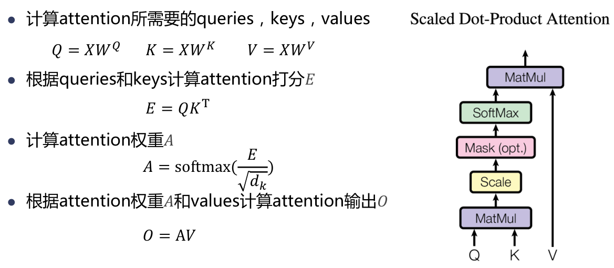
多头自注意力机制
并行地计算多个自注意力过程，并拼接输出结果
Multi-head 可以在更细致的层面上提取不同 head 的特征，总体计算两和单一 head 相同的情况下，提取特征的效果更佳。
残差连接
将浅层网络和深层网络相连，有利于梯度回传
使深处网络的训练变得更加容易
层正则
- 对输入进行标准化（减均值除以方差）
- 加速收敛，提升模型训练的稳定性
前馈网络
两层前馈神经网络
单纯的多头注意力机制不足以提取到理想的特征，因此增加全连接层来提升网络的能力
Transformer 解码器
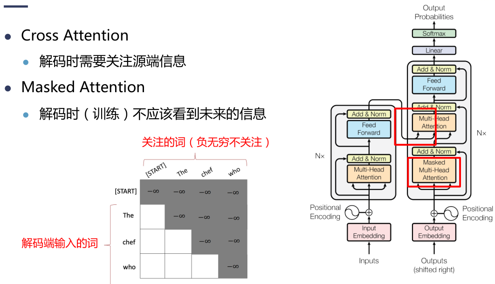
序列到序列问题实际建模
面对一个实际问题。深度学习怎么建模，参数怎么估计，怎么预测。很多问题都可以转成成序列到序列的一个自然语言处理问题，比如分类其实也可以视为序列到序列的问题，目标序列它只有一个字符，就是我们要分类的那个token.
Lecture 6 文本分类
朴素贝叶斯概念及其计算
朴素贝叶斯模型 (NAÏVE BAYES)
- 一个概率模型
- 一个生成式模型
- 具有”朴素“假设
- 特征之间相互独立，即任意两个词出现的概率互不影响。
- 适用于离散分布
- 广泛应用于文本分类、自然语言处理和模式识别
- $P(w_i|y)$ 的计算和具体的概率文档表示模型有关：伯努利文档模型、多项式文档模型
伯努利文档模型
表示文本时只考虑单词是否出现，不考虑出现次数
符号定义
- $d_t$ 表示单词 $w_t$ 是否在文本 $x$ 中出现，出现则为1，不出现则为0.
- $N$: 数据集 $D$ 中的文档总数
- $N_k$: 数据集 $D$ 中标签为 $c_k$ 的文档总数
- $n_k(w_t)$: 标签为 $c_k$ 的文档中，包含单词 $w_t$ 的文档数目
零概率（拉普拉斯平滑）
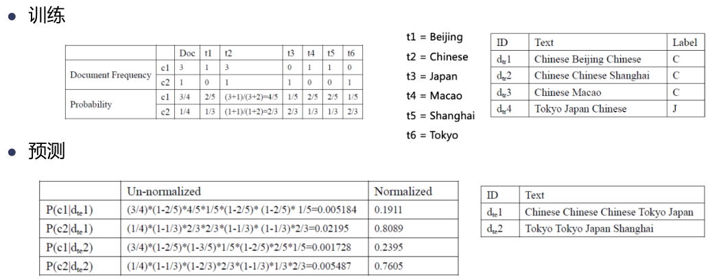
多项式文档模型
考虑了词频对文本分类的重要性
符号定义
- $N$: 数据集 $D$ 中的文档总数
- $N_k$: 数据集 $D$ 中标签为 $c_k$ 的文档总数
- $n_{it}$: 单词 $w_t$ 在第 $i$ 个文档中出现的次数
- $n_i$: 第 $i$ 个文档包含的总单词数
- $z_{ik}$: 如果第 $i$ 个文档的标签为 $c_k$, 则 $z_{ik} = 1$ 否则 $z_{ik}=0$.
零概率（拉普拉斯平滑）
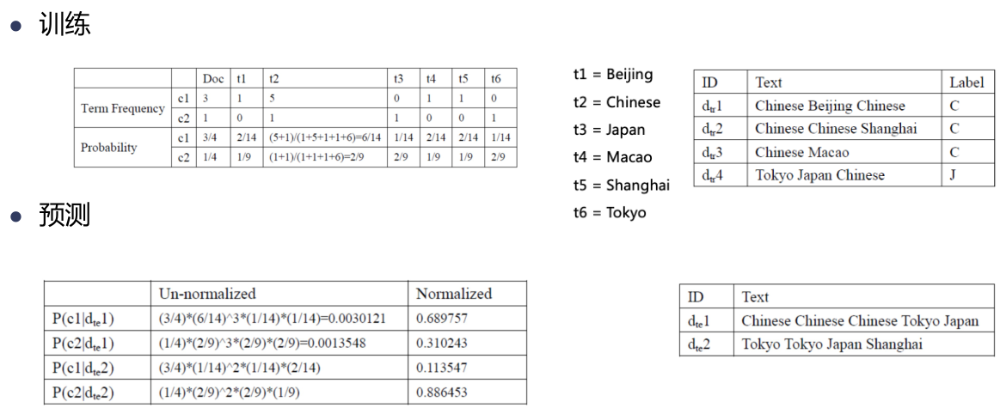
Logistic 回归、softmax 回归等概念与之相关计算
Logistic 回归
逻辑回归是一种二分类模型
逻辑回归是一种线性分类模型
用一个非线性激活函数（Sigmoid函数）来模拟后验概率
Softmax 回归
Softmax 回归是一种多分类模型，也叫做多分类逻辑回归
在 NLP 中，也被称做最大熵模型
一种经常使用的分类算法
Lecture 7 序列化标注
定义：给定一个观测序列作为输入，输出是一个标记序列或状态序列。
目标：建立一个模型，使它能够对观测序列给出对应的标记序列。
♀ 标注：给定句子 $X$，求句子对应的词性序列 $Y$
隐马尔可夫概念及其计算
概念、参数估计、如何优化
马尔可夫链：描述在状态空间中，从一个状态到另一个状态转换的随机过程。
马尔科夫假设：马尔可夫链在任意时刻 $t$ 的状态只依赖于它在前一时刻的状态，与其他时刻的状态无关。
HMM 是一阶马尔可夫链的扩展
状态序列不可见（隐藏）
隐藏的状态序列满足一阶马尔可夫链性质
可见的观察值与隐藏的状态之间存在概率关系
序列化标注的统计学模型。
- 描述了由隐马尔可夫链随机生成观测序列的过程，属于生成模型。
时序概率模型
- 描述由一个隐藏的马尔可夫链随机生成不可观测的状态随机序列，再由各个状态生成一个观测值，从而产生观测序列的过程。
计算 $P(Y)$
计算 $P(X|Y)$
计算 $P(Y, X)$
HMM 的三组参数：$\lambda = (A, B, \pi)$.
状态集合 ℚ：预先定义的词性标签集
观测值集合 𝕍：词表集合
状态转移概率：词性之间的转移概率
输出观测概率（发射概率）：某个词性生成某个词的概率
初始状态概率：以某个词性作为开始状态的概率
HMM中的三类问题
- 概率计算：给定 HMM 模型 $\lambda = (A, B, \pi)$ 和观测序列 $X = (x_1, x_2, \cdots, x_n)$, 计算观测序列 $X$ 出现的概率 $P(X|\lambda)$.
- 模型学习（参数估计）：已知观测序列 $X = (x_1, x_2, \cdots, x_n)$, 估计 HMM 模型 $\lambda = (A, B, \pi)$ 的参数，使得该模型下观测序列的概率 $P(X|\lambda)$ 最大。
- 预测（解码）：已知 HMM 模型 $\lambda = (A, B, \pi)$ 和观测序列 $X = (x_1, x_2, \cdots, x_n)$，求该观测序列对应的最可能的状态序列 $Y = (y_1, y_2, \cdots, y_n)$.
概率计算
直接计算法：枚举所有长度为 $n$ 的状态序列，计算它们生成观测序列的概率并求和
前向算法：定义前向概率 $\alpha_t(i) = P(x_1, x_2, \cdots, x_t, y_t = q_i | \lambda)$
后向算法：定义后向概率 $\beta_t(i) = P(x_{t+1}, x_{t+2}, \cdots, x_n| y_t = q_i, \lambda)$
模型学习（参数估计）
- 监督学习：训练数据包括观测序列和对应的状态序列，通过监督学习来学习隐马尔可夫模型。
- 无监督学习：训练数据仅包括观测序列，通过无监督学习来学习隐马尔可夫模型。
预测（解码）
计算目标：
维特比算法：p407-p410
Lecture 8 句法分析
句法分析
句法：一门语言里支配句子结构，决定词、短语、从句等句子成分如何组成其上级成分，直到组成句子的规则或过程。
句法分析：确定句子的组成。词、短语以及它们之间的关系。
句法分析类型
成分句法分析：研究词如何构成短语、短语如何构成句子。
(S (NP (NNP John)) (VP (VBD ate) (NP (DT the) (NN apple))))
依存句法分析：研究词之间的依赖（或支配）关系。
- 依存是有向的：词与词之间的依赖关系是二元不对称的 (“箭头”)， “箭头”头部指向的词依赖“箭头”尾部指向的词（称为依存头）
- 依存边是有类型的：表明两个词之间的依赖关系类型，如主语 (sub)、宾语 (obj)等
- 每个词只有一个依存头：没有环，依存关系是树结构
CKY 计算
自底向上的动态规划算法。由句子（带词性）和文法 $G$ 计算句法树。
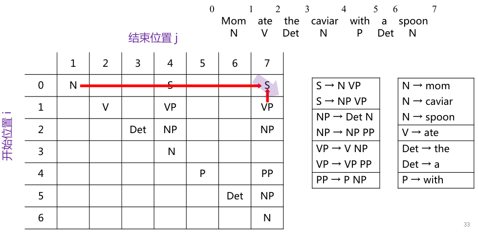
- 动态规划：将分析中间结果存放在表中，减少重复计算
- 复杂度 $O(n^3|G|)$.
- 算法前提：上下文无关文法CFG转换为乔姆斯基范式CNF
- 歧义问题
PCFG 计算
PCFG 一般由五元组构成 $G = (N, T, S, R, P)$
- $N, T, S, R$ 定义同 CFG
- $P(X \to Y_1 Y_2 \cdots Y_n)$：产生式对应的概率
- 利用 PCFG 计算一棵句法树 $t$ 的概率（用到的每条规则的概率之乘积）
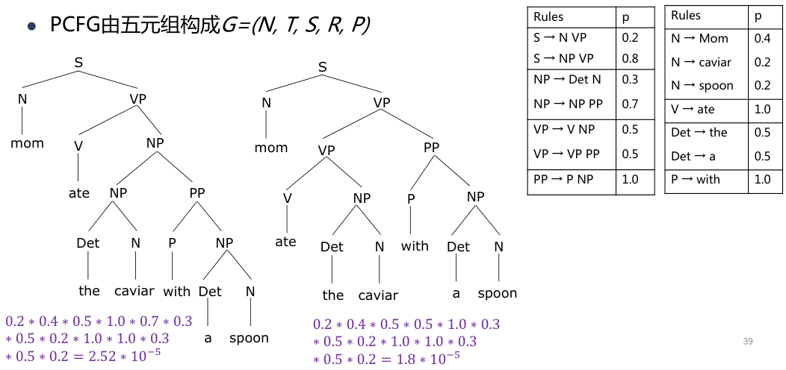
Lecture 9 机器翻译
机器翻译的思想、深度学习建模
机器翻译（Machine Translation）是一个将源语言的句子 $x$ 翻译成目标语言句子 $y$（译文）的任务。
- 理性主义：以生成语言学为基础，依靠人类先验知识
- 基于规则的机器翻译
- 经验主义：以数据驱动为基础，从数据中学习经验和知识
- 基于实例的机器翻译
- 统计机器翻译
- 神经机器翻译
神经机器翻译（Neural Machine Translation）：用端到端（end-to-end）的神经网络来建模机器翻译任务。
编码器-解码器框架（Encoder-decoder）
- Seq2Seq
- 编码器（encoder）：用来编码源语言的输入
- 解码器（decoder）：用来生成目标语言的输出
贪心解码与柱搜索
贪心解码： 解码时，每个时刻从解码器取出概率最大的词（argmax）作为预测结果。
贪心解码的问题：某一时刻的错误翻译会影响后续所有翻译，因此不一定能解码出全局最佳（译文概率最大）的译文。
枚举解码：枚举所有的翻译结果 $y$, 复杂度 $O(V^T)$ 极其耗时。
柱搜索解码：
- 在贪心搜索基础上扩大搜索空间，从而更有可能解码出全局最优的译文（贪心和枚举的折中）
- 核心思想：在 $t$ 时刻，保留 $k$ 个概率最大的翻译结果（$k$ 为 beam size）
- 相比于枚举，极大提高搜索效率
- 并不能保证一定解码出最优的译文
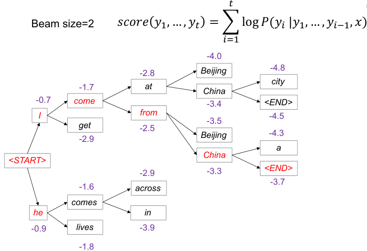
BLEU 的定义、计算、存在的问题
BLEU 的定义
- 一种衡量机器翻译质量的自动评估指标。
- 统计机器翻译译文与参考译文中 $n$ 元文法匹配的数目占系统译文中所有 $n$ 元文法总数的比例，即 $n$ 元文法的精确率。
BLEU 的计算
符号定义：
- $y^*$: 源语言句子 $x$ 对应的机器翻译译文
- $(y_1, \cdots, y_M)$: $M$ 个人工参考译文
- $count_{match}(ngram)$: 某 ngram 片段在 $y^*$ 和$(y_1, \cdots, y_M)$ 中共同出现的最大次数。（比如爱在译文中出现4次，参考译文1中出现1次，在2中出现2次，共同出现的最大次数为2）
- $count(ngram)$: ngram 片段在 $y^*$ 中出现的次数
频数统计
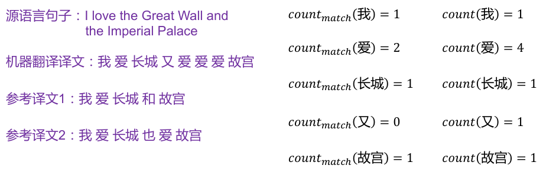
计算所有 ngram 的精确率 $p_n$
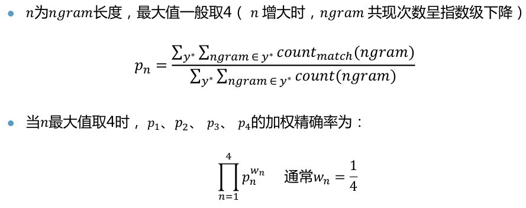
引入长度惩罚因子 $BP$, 对过短的译文进行惩罚
$c$: 测试语料中每个源语言句子对应的系统译文 $y^*$ 的长度之和
$r$: 测试语料中每个源语言句子对应的多个参考译文 $(y_1, \cdots, y_n)$ 中最短译文或者与 $y^*$ 长度最接近的参考译文的长度之和
综合 ngram 匹配精确率和长度惩罚因子，BLEU评分公式为
BLEU 的优缺点
- 优点：自动评估，能够从 ngram 角度评估翻译质量
- 缺点：无法从语义层面度量翻译质量
Lecture 10 自然语言处理范式演进
Prompt 的核心思想
深度学习范式：预训练 + 提示 + 预测
- 预训练：从海量无标记文本中学习语法和语义知识
- 提示：设计 prompt，将下游任务转换成语言模型进行训练
- 预测：利用预训练语言模型对下游任务进行预测
Prompt 定义：Prompt 是一种通过向输入文本添加额外的提示文本，从而更好地利用预训练模型知识的技术。
Prompt 工作流
- Prompt 工程：设计合适的 prompt (提示文本)，将下游任务转换为对应的语言模型任务
- Answer 工程：设计对应的单词-标签映射，将上述语言模型预测出来的词映射到对应的类别空间
核心思想：通过在输入文本中插入一个明确的提示或指导信息，以指导模型产生更准确、一致的输出。
为什么能 work: prompt 可以看做是对预训练语言模型中已经记忆的知识的一种检索方式，由于 prompt 任务形式就是预训练任务，所以相比于 fine-tuning，当使用 prompt 形式向模型中输入样本时，预测时得到了“提示”，能够更好地抽取预训练阶段学到的信息。
Prompt 设计题

Prompt Learning & Instruction Learning
区别与联系
指令学习 (Instruction Tuning)
- 构造各种不同任务的指令描述
- 人工标注或半自动构造若干任务的提示样本和答案，参与模型再训练 (有监督训练)；数据量百万级规模
- 更好地激活了模型理解用户意图（任务）能力；增强了任务本身的泛化能力(小样本/零样本的能力)
- 样例：请帮我翻译… 请润色… 请提取… 请总结…
指示学习和提示学习的目的都是去挖掘语言模型本身具备的知识。不同的是 Prompt 是激发语言模型的补全能力，例如根据上半句生成下半句，或是完形填空等。Instruct 是激发语言模型的理解能力，它通过给出更明显的指令，让模型去做出正确的行动。指示学习的优点是它经过多任务的微调后，也能够在其他任务上做 zero-shot，而提示学习都是针对一个任务的。泛化能力不如指示学习。